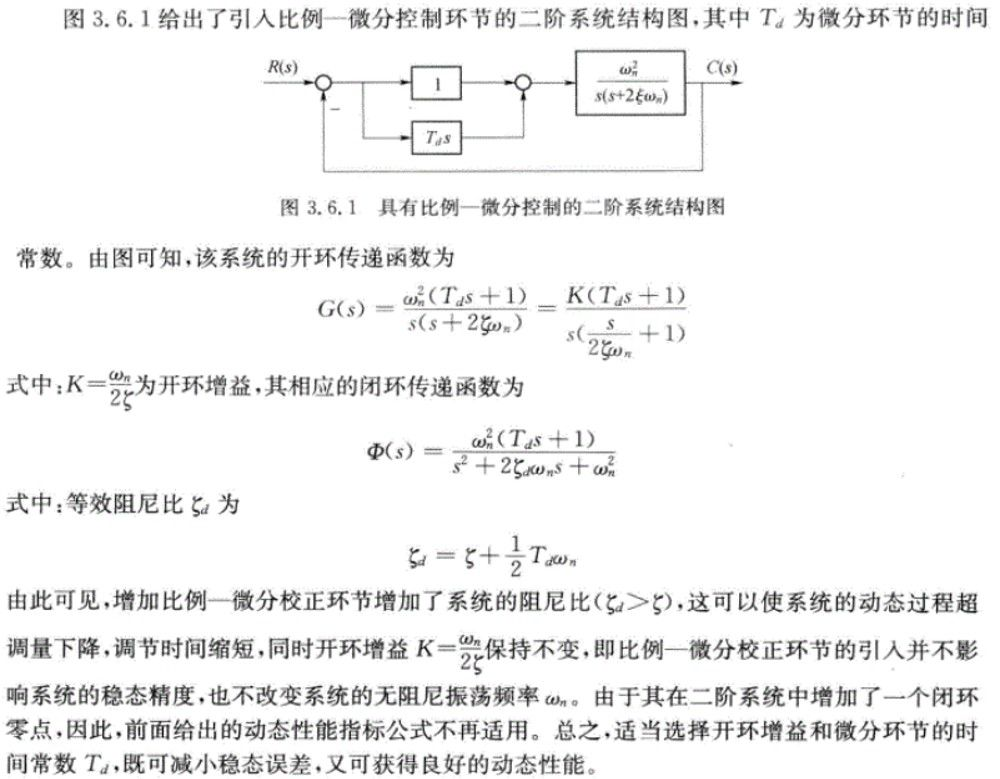
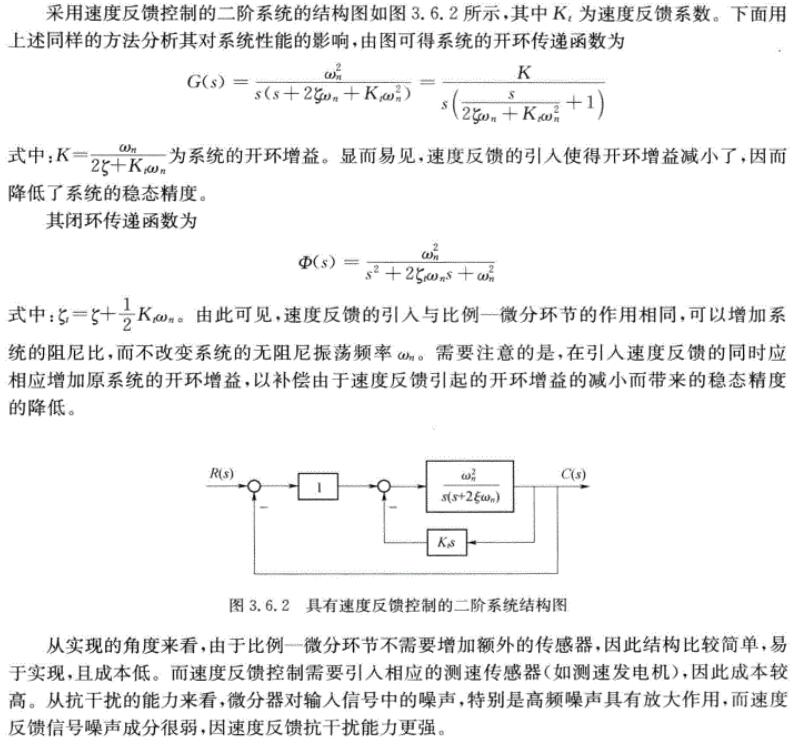
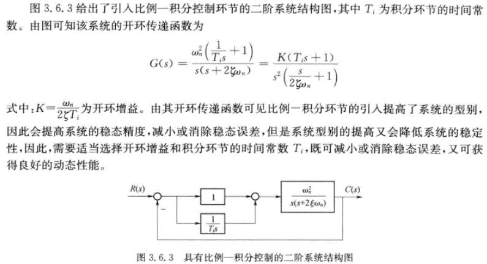
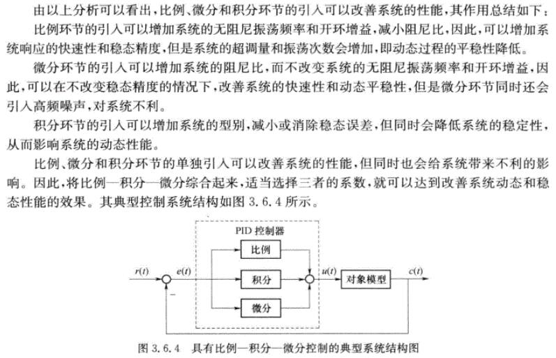

本章主要讲述物理系统如何在时间域内进行分析和设计。系统的动态和稳态性能指标是评判系统设计好坏的标准。首先给出控制系统稳定性的定义，并讨论如何利用劳斯稳定判据进行判稳；其次对典型控制系统的时域性能指标进行定性和定量描述，分析典型一阶系统、二阶系统动态时域性能指标的近似计算方法，介绍一般控制系统的稳态精度的计算方法和补偿方法以及常用的时域校正方法等；最后以某型飞机俯仰通道控制系统为例详细介绍典型时域分析的操作步骤。
引言
由第2章的知识可以将一个物理系统抽象化，建立描述其内部物理量（或变量）之间关系的微分方程、传递函数或结构图，这就为对系统性能进行理论分析和控制系统设计提供了前提。
由于多数控制系统是以时间作为独立变量的，所以人们往往关心该系统的状态和输出对时间的响应。对系统施加一给定输入信号，通过研究系统的时间响应来评价系统的性能，这就是控制系统的时域分析法。它根据描述系统的微分方程或传递函数，直接求解出在某种典型输入作用下系统输出随时间t变化的表达式或其他相应的描述曲线来分析系统的稳定性、动态特性和稳态特性。时域分析法是一种直接在时间域中对系统进行分析的方法，具有直观、准确的优点，并且可以提供系统时间响应的全部信息。
控制系统的时域性能指标
典型输入信号
定义：为了便于进行分析和设计，同时也为了便于对各种控制系统的性能进行比较，需要假定一些基本的输入函数形式，称为典型输入信号。典型输入信号，是指根据系统常遇到的复杂的实际输入信号的近似和抽象，并在数学描述上加以理想化的一些基本输入函数。
控制系统中常用的典型输入信号有单位阶跃函数、单位斜坡（速度）函数、单位加速度（抛物线）函数、单位脉冲函数和正弦函数，如下表所列。这些函数都是简单的时间函数.便于数学分析和实验研究。

实际应用时究竟采用哪一种典型输入信号，取决于系统常见的工作状态；同时，在所有可能的输入信号中，往往选取最不利的信号作为系统的典型输入信号，这种处理方法在许多场合是可行的。例如：
| 输入信号 |
适用系统 |
| 阶跃函数 |
室温调节系统、水位调节系统以及工作状态突然改变或突然受到恒定输入作用的控制系统 |
| 斜坡函数 |
跟踪通信卫星的天线控制系统。以及输入信号随时间逐渐变化的控制系统 |
| 加速度函数 |
宇宙飞船控制系统 |
| 脉冲函数 |
控制系统的输入信号是冲击输入 |
| 正弦函数 |
系统的输入作用具有周期性的变化 |
同一系统中，不同形式的输入信号所对应的输出响应是不同的。但对于线性控制系统来说，它们所表征的系统性能是一致的。通常，以单位阶跃函数作为典型输入作用，则可在一个统一的基础上对各种控制系统的特性进行比较和研究。
动态性能与稳态性能
控制系统在输入信号的作用下，其输出量中包含瞬态分量和稳态分量两个分量。对于稳定的系统，瞬态分量随时间的推移而逐渐消失，稳态分量则从输入信号加入的瞬时起就始终存在。
动态过程又称过渡过程或瞬态过程，是指系统在典型输入信号作用下，系统输出量从初始状态到最终状态的响应过程。
稳态过程指系统在典型输入信号作用下，当时间t趋于无穷时，系统输出量的表现方式。稳态过程又称稳态响应，表征系统输出量最终复现输入量的程度，提供系统有关稳态误差的信息。
描述稳定的系统在单位阶跃函数作用下，动态过程随时间t的变化状况的指标称为动态性能指标。

| 名称 |
含义 |
| 延迟时间td |
响应曲线第一次达到其终值一半所需的时间 |
| 上升时间tr |
对于振荡的系统，响应曲线从零第一次上升到终值所需的时间
对于非振荡衰减系统，响应曲线从终值的10%上升到终值的90%所需的时间 |
| 峰值时间tp |
响应曲线超过其终值到达第一个峰值所需的时间 |
| 调节时间ts |
响应曲线到达并保持在终值±5%(或±2%)误差带之内所需的最短时间 |
| 超调量σ% |
响应曲线与其初始状态的最大偏离量h(t_p)与终值h(∞)的差与终值h(∞)比的百分数，若h(t_p)<h(∞)，则响应无超调 |
稳态误差是描述系统稳态性能的一种性能指标，通常在阶跃函数、斜坡函数或加速度函数作用下进行测定或计算。若时间趋于无穷时.系统的输出量不等于输入量或输入量的确定函数，则系统存在稳态误差。稳态误差是系统控制精度(准确性)或抗扰动能力的一种度量。
基于传递函数的时域响应求解


线性系统的稳定性分析
稳定性的基本概念
一个控制系统在实际应用中。当受到扰动作用时。就会偏离原来的平衡工作状态。产生初始偏差。
所谓平衡状态是指物体或系统所处的一种状态。处于平衡状态的物体或系统，除非受到外界的影响，它本身不能有任何自发的变化。而所谓稳定性是指原来处于平衡状态的系统在扰动作用消失后。经过一段过渡过程后能否恢复到原来的平衡状态或足够准确地恢复到原来的平衡状态的性能。若扰动消失之后，不能恢复到原平衡状态。而且偏差越来越大的，系统就是不稳定的。
若系统在初始偏差作用下，其过渡过程随着时间的推移，逐渐衰减并趋向于零，具有恢复到原平衡状态的性能，则称该系统为渐近稳定，简称稳定。若干扰消失后系统不能恢复到原来的平衡状态，偏差越来越大，则系统是不稳定的。
线性系统稳定的充分必要条件
线性系统的时域响应可分为两部分：稳态分量和暂态分量。其中稳态分量和输入有关，而暂态分量与系统的结构、参数和初始条件有关，是系统齐次方程的解，由系统特征方程决定，即线性系统的稳定性仅取决于系统自身的固有特性，而与外界条件无关。
一般来说，线性系统的稳定性表现为其时域响应暂态分量的收敛性。如果线性系统的时域响应暂态分量是收敛的，则此系统就被认为是稳定的。线性系统时域响应暂态分量可由其理想单位脉冲响应来表示。
设闭环传递函数为：
Φ(s)=(s+p1)(s+p2)⋯(s+pn)1=i=1∏ns+pi1
单位理想脉冲对应输出则为：
r(t)=δ(t) → R(s)=1C(s)=Φ(s)R(s)=i=1∑ns+piAi
理想脉冲（多倍）响应为：
k(t)≜c(t)=i=1∑ncie−pit
当系统的脉冲响应随着时间推移趋于零，则系统是稳定的。即满足：
t→∞limk(t)=0
所以闭环系统特征方程的所有根均具有负实部。
一般情况下，确定系统稳定性的方法如下：
直接对线性系统特征方程求解。根据稳定的充分必要条件判别线性系统的稳定性，需要求出系统的全部特征根。对于高阶系统，求根的工作量很大，因此，希望使用一种间接判断线性系统特征根是否全部严格位于s左半平面的代替方法。劳斯稳定判据。劳斯于1877年提出了判断线性系统稳定性的代数判据，称为劳斯稳定判据。 这种判据以线性系统特征方程的系数为依据，是一种通过判断线性系统特征根所在区域的间接判稳方法。根轨迹法。根轨迹是一种图解方法，使用十分方便。它是一种根据线性系统开环传递函数零点和极点确定闭环传递函数极点（即线性系统特征根）的方法，由此可以判断线性系统的稳定性。具体内容在第4章进行介绍。奈奎斯特稳定判据。奈奎斯特稳定判据是根据线性系统开环传递函数的频域特性，即奈奎斯特图（或伯德图）进行稳定性判断的方法，也是一种图解方法。具体内容在第5章进行介绍。
劳斯稳定判据
劳斯判据给出的是特征根实部的符号与特征方程系数的关系。设线性系统的特征方程（分母）为：
D(s)=a0sn+a1sn−1+⋯+an−1s+an=0(a0>0)
定理：线性系统稳定的必要条件是特征方程的所有系数均为正且不缺项，否则系统一定不稳定。
但上述条件对于高于二阶的系统并不充分，即高阶系统虽满足必要条件，但很可能有正实部根存在，系统未必稳定。要判断高于二阶系统的稳定性还需要研究其充分必要条件，这就是劳斯稳定判据。

按照劳斯稳定判据，由特征方程所表征的线性系统稳定的充分且必要条件是：劳斯表中第1列各值为正。如果劳斯表第1列出现小于零的数值，系统就不稳定。且第1列各系数符号的改变次数，代表特征方程正实部根的数目。

以下说法均等价：
- 线性系统稳定；
- 闭环系统特征方程的所有根均具有负实部；
- 闭环传递函数的极点均严格位于左半s平面；
- 系统的脉冲响应应随着时间推移趋向0；
- 特征方程的所有系数均为正，且补缺项；
- 劳斯表中第一列元素全部大于0。
劳斯稳定判据的特殊情况


全零行表明特征方程存在绝对值相同、但符号相反的特征根（可知系统必不稳定）；解辅助方程可以得到这些对称于原点的根。
劳斯稳定判据的应用


注意：图片中的表述似乎存在错误。应当用s1=s-σ代入原系统特征方程。下面用例子辅助说明：
现需验证系统的特征根是否全部位于s=-1之左，可以把所有根都向右移动一个单位之后验证是否全部位于s=0之左。该过程等效于用s1=s-1代入原特征方程（符合“左加右减”）后列劳斯表验证。

线性系统的快速性分析
一阶系统

单位阶跃响应有：
C(s)=φ(s)R(s)=Ts+11⋅s1=s1−Ts+1Tc(t)=1−e−t/T(t≥0)
求解动态性能指标，5%误差带
c(ts)=1−e−Tts=0.95ts=−Tln0.05=3T
该输出量c(t)的初始值等于0，最终趋向于1。常数项1是由1/s反变换得到，该分量随时间变化的规律与外作用相关。由于它在稳态过程中仍起作用，故称为稳态分量(稳态响应)。第二项由1/(s+1/T)反变换得到，它随时间变化的规律取决于传递函数1/(Ts+1)的极点，称为暂态分量(瞬态响应）。可见，阶跃响应曲线具有非振荡特性，故也称为非周期响应。
若输入量或传递函数发生倍数变化，并不影响动态性能指标调节时间t_s。
单位斜坡响应有：
r(t)=t → R(s)=s21C(s)=φ(s)R(s)=Ts+11⋅s21=s21−sT+1+TsT2c(t)=t−T(1−e−t/T)
比较系统对不同输入信号的响应，可以看出，系统对输入信号导数的响应，等于系统对该输入信号响应的导数，或者说，系统对输入信号积分的响应，等于系统时该输入信号响应的积分，其积分常数由零输出初始条件确定。这是线性定常系统的一个重要特性，不仅适用于一阶性定常系统，而且适用于任意阶线性定常系统。

二阶系统的数学模型
以二阶微分方程或传递函数分母中s的最高次幂为二阶的系统称为二阶系统(Second-order systems)，标准形式为：
特征方程：特征根：φ(s)=R(s)C(s)=s2+2ζωns+ωn2ωn2D(s)=s2+2ζωns+ωn2=0s1，2=−ζωn±ωnζ2−1
式中：ω_n表示无阻尼振荡频率，ζ表示阻尼比，他们是二阶系统重要的特征参数。
随着阻尼比的不同，二阶系统的闭环极点也不同，可分为以下几种情况：
- 当0<ζ<1时，方程有一对实部为负的共轭复根，系统的时间响应具有振荡特性，称为
欠阻尼状态。
- 当ζ=1时，系统有一对相等的负实根（重根），称为
临界阻尼状态。
- 当ζ>1时，系统有两个不相等的负实根，称为
过阻尼状态。临界阻尼和过阻尼状态下，可等价于两个一阶环节的串联，系统的时间响应均无振荡。
- 当ζ=0时，系统有一对纯虚根，称为
零阻尼状态.系统时间响应为持续的等幅振荡。
- 当ζ<0时，系统具有一对实部为正的共轭复根，系统时间响应具有
发散振荡特性，称为负阻尼状态。

过阻尼（ζ>1）
系统闭环特征方程的两个负实根分别为：
s1，2=−ζωn±ωnζ2−1令T1=ωn(ζ−ζ2−1)1 ， T2=ωn(ζ+ζ2−1)1 ， (T1≥T2)
在单位阶跃作用下过阻陀二阶系统的输出为:
c(t)=L−1[C(s)]=L−1[s2+2ζωns+ωn2ωn2⋅s1]=L−1[(s+1/T1)(s+1/T2)1/(T1T2)⋅s1]=1+T2/T1−11e−t/T1+T1/T2−11e−t/T2 ， (t≥0)

该响应为无振荡的单调上升曲线，为非周期响应。其主要动态性能指标主要是t_s，在ζ>1，T_1/T_2≥4，t_s=3T_1。由于过阻尼系统响应缓慢，故通常不希望采用过阻尼系统。但是，这并不排除在某些情况下，例如，在低增益、大惯性的温度控制系统中，需要采用过阻尼系统；另外，在有些不允许时间响应出现超调，而又希望响应速度较快的情况下，例如，在指示仪表和记录仪表系统中，需要采用临界阻尼系统。

临界阻尼（ζ=1）
s1,2单位阶跃响应：c(t)性能指标：ζ=−ωn ， T1=1/ωn=L−1[C(s)]=L−1[s2+2ζωns+ωn2ωn2⋅s1]=L−1[(s+ωn)2ωn2⋅s1]=1−(1+ωnt)e−ωnt ， (t≥0)=1 ， ts=4.75T1
响应具有非周期性，没有振荡和超调。

欠阻尼（0<ζ<1）
衰减系数：阻尼振荡频率：阻尼角：s1,2=−ζωn±jωn1−ζ2=−σ±jωdσ=ζωnωd=ωn1−ζ2β=arccosζ
- 临界阻尼响应具有最短的上升时间，响应速度最快；
- 在欠阻尼响应曲线中，
阻尼比越小，超调量越大，上升时间越短，一般取ζ=0.4~ 0.8，此时超调量适度，调节时间较短；
- 若二阶系统具有相同的ζ和不同的ω_n则其
振荡特性相同但响应速度不同，ω_n越大，则响应速度越快。
c(t)包络线：ζ=0：=L−1[C(s)]=L−1[s2+2ζωns+ωn2ωn2⋅s1]=1−1−ζ2e−ζωntsin(ωdt+β)1±e−ζωnt/1−ζ2 ， (t≥0)c(t)=1−sinωnt


上升时间tr：⟹⟹峰值时间tp：⟹最大超调量σ%：调节时间ts：c(tr)=1−1−ζ2e−ζωntrsin(ωdtr+β)=1sin(ωdtr+β)=0tr=ωdπ−β=ωn1−ζ2π−βdtdc(t)∣t=tp=0c′(t)=1−ζ2ωne−ζωntsinωdt=0tp=ωdπ=ωn1−ζ2πσ%=e−πζ/1−ζ2∗100%ts≈ζωn3.5 ， Δ=5%，ζ≤0.8ts≈ζωn4 ， Δ=2%，ζ≤0.8


线性系统的准确性分析
定义
误差定义：系统的理想输出量c_r(t)和实际输出量c(t)之差，用e(t)表示。
e(t)=cr(t)−c(t)
当时间趋于无穷时。对于稳定的系统，误差信号的瞬态分量将趋向于零，剩下的是误差的稳态分量，把误差的稳态分量定义为系统的稳态误差。实质上，稳态误差也可以理解为希望输出的稳态值与实际输出的稳态值之差。
ess=t→∞lime(t)=s→0limsE(s)
输入作用下的稳态误差
{E(s)=R(s)−Cr(s)H(s)C(s)=E(s)G(s)

扰动作用下的稳态误差
{E(s)=R(s)−Cr(s)H(s)C(s)=[E(s)G1(s)+N(s)]G2(s)


稳态误差计算的基本方法：
- 判断系统稳定性，求特征方程1+G1G2H=0；
- 求稳态误差，直接套公式，尽可能使用终值定理。
系统型别与典型输入下的稳态误差

设开环传递函数G(s)的典型形式如下：
G(s)=sν(T1s+1)(T22s2+2ζ1T2s+1)⋯(Tjs+1)K(τ1s+1)(τ22s2+2ζ1τ2s+1)⋯(τis+1)=sνKG0(s)s→0limG0(s)=1
式中K为开环增益，ν为系统型别，ν=0，1，2分别称为0型，Ⅰ型，Ⅱ型系统。此时，系统误差为：
E(s)ess=R(s)−C(s)=1+G(s)1R(s)=1+sνKG0(s)1R(s)=s→0limsE(s)=s→0lims1+sνKG0(s)1R(s)=s→0lims1+sνK1R(s)=s→0limssν+Ksν+1R(s)
以斜坡函数为例：
essr(t)=V0t → R(s)=s2V0=s→0limsE(s)=s→0limsν+Ksν+1⋅s2V0=s→0limKV0sν−1=⎩⎨⎧∞,ν=0KV0,ν=10,ν≥2

- 系统型别ν或开环增益K增大，易消除或减少稳态误差，但太大容易引起系统不稳定
- R0、A0、V0增大，使得稳态误差增大


扰动作用下稳态误差分析
- 扰动作用下的稳态误差与
扰动作用点之前的前向通道传递函数中的积分环节的个数和增益大小有关，增大v或K均可以使稳态误差减小；
- 稳态误差大小与
扰动作用点之后的前向通路传递函数中积分环节的个数和增益大小无关。
- 但积分环节越多，系统越不稳定，同时，K大也容易使系统不稳定。
减小和消除稳态误差方法
为了减小或消除系统在输入信号和扰动作用下的稳态误差，可以增大系统开环增益(或扰动作用点之前系统的前向通道增益)或增加积分环节的个数(提高系统的型别)。但这两种方法在其他条件不变时，一般都会影响系统的动态性能，乃至系统的稳定性。若在系统中加入顺馈控制作用，既可以使控制系统获得较高的稳态精度，又具有良好的动态性能。


线性系统的时域法校正
设计控制系统的目的，是将构成控制器的各元件与被控对象适当组合起来，使其满足稳态误差、阻尼程度和响应速度的性能指标要求。如果通过调整前向增益后仍然不能全面满足设计要求的性能指标，就需要在系统中加入一些其参数可以根据需要而改变的环节，使系统整个特性发生变化，从而满足给定的各项性能指标。这就是控制系统设计中的校正问题。
在控制系统设计中，常用的校正方式为串联校正和反馈校正两种。究竟选用哪种校正方式，取决于系统中的信号性质、技术实现的方便性、可供选用的元件、抗扰性要求，经济性要求，环境使用条件以及设计者的经验等因素。在性能指标要求较高的控制系统设计中，常常兼用串联校正与反馈校正两种方式。用这些基本控制规律的某些组合，如比例-微分、比例-积分.比例-积分-微分等组合控制规律，以实现对被控对象的有效控制。
下面将通过实例来分别对以上三种不同的组合控制校正方法进行分析和设计。
比例-微分环节（PD）校正


比例-积分环节（PI）校正

比例一积分一微分环节（PID）校正
